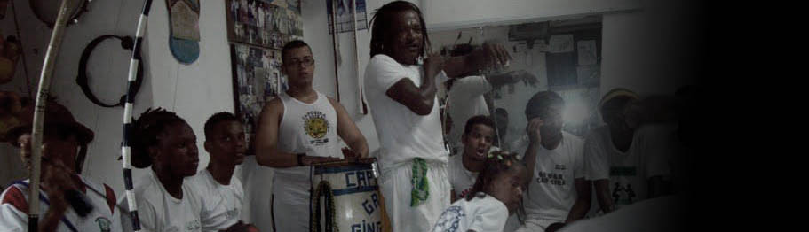

 |
Only Life
Exemplo inicial
Outro exemplo interessante é quando a mulher está sentada com a bolsa ou almofada no seu colo. Seu corpo fala: “Eu não estou à vontade”. Não adianta querer seduzir a pessoa nesse estado, pois a probabilidade de ouvir um "não!" é grande.
Imagine agora esta cena: estamos diante de duas mulheres que estão conversando. Elas estão descontraídas e mergulhadas numa ótima conversa. Como identificar quem domina a situação apenas pela expressão corporal? A primeira pessoa que modificar a posição dos braços, tórax e pernas é a "líder" neste momento da conversa, logo em seguida, se a outra imitar os gestos, inconscientemente, mostrará harmonia de pensamento e/ou atenção à sua parceira. Caso você deseje entrar nesse ambiente para seduzir alguém, tenha cautela, pois nesse local harmônico pode não existir espaço para você!
Continuar lendo